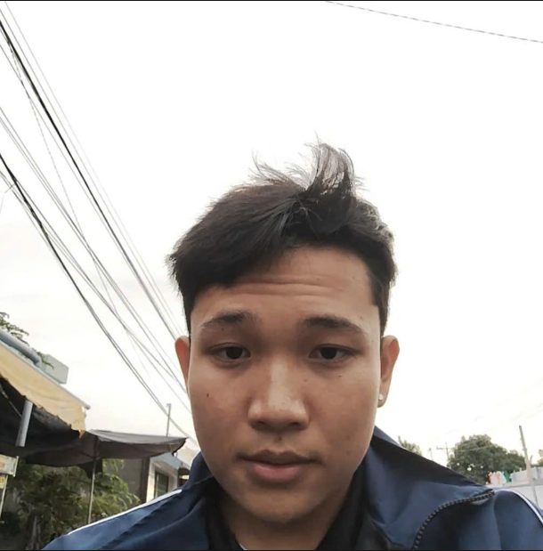
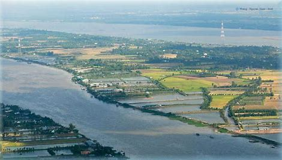

Chào bạn, tôi là Thạch Tuấn Khởi
Em ở Cầu kè. Em cao 1m60 nặng 62kg nhóm máu A 17 tuổi tháng 1 này lên 18 . Muốn hỏi em gì thêm thì liên hệ qua số 0397185120 em tư vấn trực tiếp
Sở thích của tôi
- Xem Phim
- Ăn Uống
- Làm tỉ phú
Đặc sản của nơi tôi sống
- Cù Lao Tân Quy
Cù lao Tân Quy là cù lao nhỏ nằm giữa dòng sông Hậu thuộc địa phận xã An Phú Tân, huyện Cầu Kè, tỉnh Trà Vinh, Việt Nam. Cù lao Tân Quy nằm cách thành phố Trà Vinh hơn 50 km về hướng tây bắc. Cù lao này có một vườn cây ăn trái, với nhiều loại trái cây đặc sản nổi tiếng khắp gần xa như chôm chôm, nhãn xuồng cơm vàng, sầu riêng, măng cụt… đặc biệt măng cụt Tân Quy đang được ưa chuộng trên thị trường trong và ngoài nước bởi chất lượng cao và sản lượng ổn định. Nghề truyền thống ở cù lao này là nghề "săn cá Bông lau".[1] Cù lao Tân Quy có diện tích 929 ha

Để biết thêm về Cù Lao Tân Quy hãy nhấn vào đây
Hy vọng bạn sẽ có thêm thông tin về tôi và nơi tôi sống. Nếu bạn muốn kết nối hoặc có câu hỏi nào, đừng ngần ngại liên hệ qua boxkhoi1231boxkhoi1231@gmail.com.